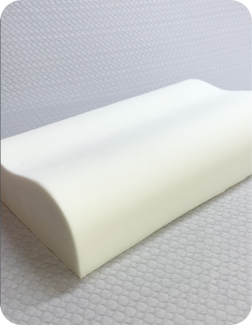

Материалы
Основа изделия
Пенополиуретан с эффектом памяти RIXES с добавлением ионов серебра (Ag+) для антибактериальных свойств.
Пенополиуретан RIXES с эффектом памяти обеспечивает 100% комфорт, благодаря его пористой структуре данный материал под воздействием тепла и веса человека легко принимает форму тела, повторяет его контуры и физиологические изгибы. Процесс трансформации происходит плавно, что исключает травматическую нагрузку на позвоночник, суставы и мышцы. А после прекращения давления на поверхность для восстановления первоначального вида требуется менее 10 секунд.
Пенополиуретан RIXES с эффектом памяти обладает рядом преимуществ:
- Тонко реагирует на нагрузку и тепло — под весом тела человека и его температуры материал становится вязким, его структура размягчается и легко подстраивается под анатомические контуры.
- Создает ощущение невесомости во время отдыха — равномерно распределяется весовая нагрузка на изделие.
- Отсутствует эффект ответного давления.
- Не подвержены биопоражениям — в них не развиваются плесень и микроорганизмы.
- Гипоаллергенность — отсутствие аллергических реакций, а также пенополиуретан RIXES не накапливает пыль.
- Отличная вентиляция изделия — за счет ячеистой структуры воздух плавно циркулирует внутри материала, создается комфортный микроклимат.
- Долговечность — срок службы изделия до 5 лет без изменения и потери первоначальных свойств.
Внешний материал
Уникальный материал RIXES — долгий срок службы и комфорт. Трикотаж
RIXES выполнен из полиэстера (57%) и вискозы (43%).
Вискоза — экологичное и натуральное волокно, изготавливаемое в процессе регенерации целлюлозы из древесины
хвойных пород. Чехлы для изделий RIXES с волокнами вискозы мягкие, приятные на ощупь, дают ощущение прохлады в
жару и не электризуются.
Трикотажный велюр — мягкость и комфорт. Материал, состоящий на 80% из хлопка, отлично служит для чехла, соприкасающихся с кожей человека. Хлопок впитывает излишнюю влагу, приятен на ощупь, удобен в использовании, легок в уходе.
Интерлок (100% хлопок) — комфорт и безопасность ребенка. Хлопок — натуральный растительный материал, обладающий следующими свойствами: гипоаллерген, безопасен, препятствует росту бактерий, отлично пропускает воздух, хорошо проводит тепло. Изделия из хлопка не электризуются, легко стираются и быстро сохнут. Свойства хлопка особенно важны для кожи ребенка.
Капитоний — трикотажное полотно из трёх слоёвю Внутренний слой — это утеплитель. Материя снаружи по описанию похожа на мелкие ромбики или квадраты. Внутри находятся параллельные ряды утеплителя. Его фиксируют и расправляют с помощью специального оборудования. В конце он заполняет все внутренние ячейки. Состав 80% хлопка 20% полиэстр.
Tencel — для людей с чувствительной кожей. Tencel — материал натурального происхождения, который изготавливают из древесины австралийского эвкалипта и подвергают нанообработке. Эвкалипт ценится своими антибактериальные свойствами. Вещества, содержащиеся в эвкалипте, препятствуют размножению микроорганизом и обладают выраженными антимикробными свойствами. В полотне никогда не заведется плесень или пылевой клещ.